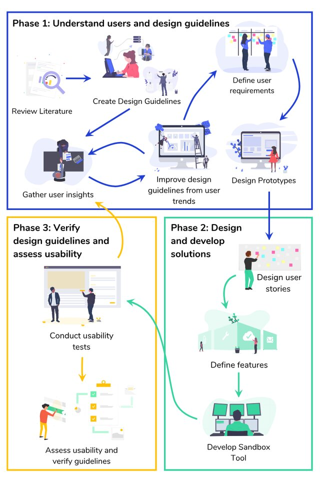

When I began my journey into machine learning (ML), the landscape was as daunting as it was exciting. As a programmer with a background primarily in software development, I understood code, but ML concepts often felt like trying to read a script from an entirely different movie. This gap between understanding traditional programming and grappling with ML’s abstract concepts was a challenge I faced daily.
Life Finds a Way #
I remember the frustration of trying to piece together the functionality of ML models without seeing the immediate impacts of code changes. It wasn’t just about writing code; it was about understanding the story it told through data. This barrier is what motivated me to develop TREX (Toolbox for Regression Experiments), aiming to make ML accessible, especially for visual programmers like myself who thrive on seeing their code come to life.
In this blog post, I’ll take you through the creation of TREX, from the initial spark of inspiration to the final user feedback. Whether you’re a novice eager to dip your toes into machine learning or a seasoned programmer looking for a more intuitive way to interact with data, I hope to share insights that will illuminate your path and make the journey less intimidating.
Spared No Expense in Development #
The idea for TREX originated from a blend of necessity and aspiration. As a programmer transitioning into the world of machine learning, I recognized the steep learning curve that many, including myself, faced. The tools available were either too advanced, obscuring the learning process, or overly simplified, offering little insight into the underlying mechanics. What if there was a middle ground? A tool that not only demystified machine learning but also engaged users in a visual and interactive manner? This question led to the conception of TREX.
Building TREX: Integrating Visual and Computational Elements #
Developing TREX required a marriage of visual programming and machine learning functionality. The first component was the visual programming interface. For this, I turned to Google’s Blockly framework, a widely respected platform known for enabling visual code editing. Blockly allows users to assemble code blocks as if they were pieces of a puzzle. This approach is not just user-friendly; it visually represents the structure and flow of programming logic, making it ideal for novice programmers who benefit from seeing how individual pieces fit together.
The second component involved the computational backbone of TREX. To handle the machine learning operations, particularly linear regression, I integrated Sci-kit Learn, a powerful library for machine learning in Python. Sci-kit Learn provided the necessary tools to implement robust machine learning algorithms efficiently and effectively. By combining it with Blockly, I could offer users a hands-on experience where they could manipulate data and immediately see the effects of their changes through real-time visual feedback.
Visual Programming Meets Machine Learning #
The integration of Blockly and Sci-kit Learn into TREX was a pivotal development. Users could drag and drop blocks that represent different aspects of the machine learning pipeline—data preprocessing, model training, and results evaluation. Behind each block, Sci-kit Learn functions were hard at work, calculating predictions, regressions, and various metrics that users could explore and modify through simple interactions.
The goal with this setup is not only to reduce the intimidation factor associated with coding but also provided a tangible way to understand and control machine learning processes. Each block adjustment or addition was a lesson in ML, revealing how changes in parameters or data manipulation could impact outcomes. This immediate feedback loop was crucial for learning and experimentation, bridging the gap between abstract concepts and practical application.
Iterations on the Path to Discovery #
The development of TREX was firmly rooted in a user-centric design philosophy. Recognizing that effective tools are built not just by engineers but with users, we embraced an iterative design process. This approach allowed us to continuously refine and evolve TREX based on real user feedback and interactions. Each iteration brought us closer to a tool that could truly meet the needs of novice programmers venturing into the world of machine learning.
First Iteration: Initial Reactions and Basic Usability #
The initial prototype of TREX was simple. Its primary aim was to introduce the concept of a visual programming tool for machine learning and gauge initial reactions. We wanted to understand how users felt about the tool and how they interacted with its basic features. This phase was less about technical perfection and more about validation of the concept. Did users find the idea of visually assembling machine learning models appealing? Could they intuitively understand what each block was supposed to do?
Feedback from this phase was invaluable. Users expressed enthusiasm about the visual approach, which confirmed we were on the right track. However, they also highlighted several areas for improvement, such as the need for more detailed feedback on the machine learning process and clearer indications of block functionalities.
Second Iteration: Identifying Missing Features #
Armed with insights from the first iteration, we focused the second iteration on expanding TREX’s functionality. Users had identified key features that were missing, which could enhance their learning experience and provide a more robust tool. We introduced new code blocks for data handling and analysis, improved error messages, and integrated a more comprehensive set of machine learning functions.
This iteration was also about refining the user interface to make it more intuitive. We needed to ensure that each component of TREX was self-explanatory and that users would not feel overwhelmed by the options available. The feedback from this phase was crucial, as it directly influenced the additions and changes we made, ensuring that TREX was evolving in line with user needs and expectations.
Third Iteration: Reacting to Enhanced Features #
The third and final iteration before the official release focused on implementing the feedback from the second iteration. We introduced advanced features like the regression map visualization, which allowed users to see a graphical representation of the data trends and patterns. Additionally, we added functionality to export and import code, empowering users to take their projects beyond the TREX environment.
This phase was critical for assessing the usability and effectiveness of the new features. We observed how users interacted with the enhancements and gathered data on their impact on the user’s ability to understand and utilize machine learning concepts more effectively.
![The TREX General Interface. It is composed of three main parts: (i) The Sandbox section, (ii) The Code Translation and Output Section and (iii) The Regression Visualisation section. There is a toolbox on the left where users can pick CodeBlocks from the different categories presented. There is a workspace section where users can drag into the CodeBlocks picked from the toolbox. The CodeBlocks can be rearranged and have values keyed in. A code interface section generates the equivalent python code of the CodeBlocks that they have selected. This helps the user translate the visuals into runnable code they can execute should they wish to port into different platforms. The logs messages are also visible (in green) that shows the possible console output of the code. Lastly, a visualization chart can be seen, which helps the user interpret the recently completed regression experiment.](img/The-TREX-General-Interface-It-is-composed-of-three-main-parts-i-The-Sandbox-section_W640.jpg)
Evolution of the Tool #
As TREX developed through its iterative phases, each component and feature was crafted to enhance the learning and usability for users, especially those new to machine learning. The tool’s evolution was marked by the addition of innovative features, designed to bridge the gap between novice understanding and advanced machine learning techniques. Here, I’ll delve into some of the core features that define TREX, reflecting on how each contributes to the tool’s goal of making machine learning more approachable and interactive.
Google Blockly Integration #
One of the pivotal features of TREX is its use of Google’s Blockly framework. This integration allows users to visually piece together their machine learning models using draggable code blocks. This visual approach is not just about simplifying the coding process—it’s about making the logic behind machine learning tangible. Users can see how data flows from one function to another, how models are trained, and how predictions are generated, all through a series of connected blocks.
Sci-kit Learn’s Machine Learning Libraries #
At the heart of TREX’s computational power is the Sci-kit Learn library, which supports all the machine learning operations within the tool. By leveraging Sci-kit Learn, TREX provides users with access to a range of robust, pre-built ML algorithms and functions that are essential for building and testing machine learning models. This backend ensures that while the front end remains user-friendly and accessible, the underlying technology is powerful and capable of performing complex machine learning tasks.
Interactive Regression Map and Real-Time Feedback #
A standout feature added in the later iterations of TREX is the interactive regression map. This visualization tool allows users to immediately see the effects of their programming decisions. For instance, as users adjust parameters or data sets within the Blockly interface, the regression map updates in real-time, providing visual feedback on how those changes affect the model’s predictions. This feature not only aids in understanding complex concepts but also encourages experimentation and learning through immediate feedback.
Code Export and Import Capabilities #
Recognizing that learning and real-world application are two sides of the same coin, TREX includes features to export and import code. This functionality enables users to take the code they’ve constructed visually and implement it in more traditional programming environments. Whether it’s for further refinement, integration into larger projects, or simply to learn how the visual blocks translate into written code, this feature provides a bridge between the educational environment of TREX and the practical demands of real-world programming.
The development of these features was guided by direct user feedback and a clear understanding of the educational challenges faced by novice machine learners. Each feature was carefully designed to not only simplify the learning process but also to empower users by providing them with the tools to see immediate results and gain confidence in their abilities to manipulate and understand data.
Holding On to Your Butts: Overcoming Development Hurdles #
Throughout the development of TREX, we encountered several challenges that shaped our approach and deepened our understanding of creating educational tools. These challenges were not just obstacles but opportunities that allowed us to refine TREX into a tool that could genuinely benefit users by simplifying complex concepts through visual programming.
The Balancing Act #
One of the significant challenges we faced was integrating Google Blockly with the Sci-kit Learn libraries. Blockly is fantastic for visual logic construction, but it naturally limits the flexibility that experienced programmers might expect. This is because Blockly abstracts code into blocks, which simplifies processes but also removes the granular control that traditional coding provides.
Similarly, while Sci-kit Learn is a robust library for machine learning, it assumes a certain level of structure and cleanliness in the data it processes. This requirement often clashed with the more dynamic and varied inputs that come from Blockly’s visual interface. Balancing these aspects—maintaining the educational simplicity of Blockly while leveraging the power of Sci-kit Learn—required careful design and constant tweaking of how the two frameworks interact.
Flexibility vs. User-Friendliness #
Another significant challenge was striking the right balance between flexibility and user-friendliness. The more options and features we added to TREX, the more complex it became for novice users. Our goal was to keep the tool intuitive and accessible, which sometimes meant sacrificing advanced features that could have introduced confusion.
This limitation was particularly evident in the tool’s flexibility to handle different types of data or to allow users to write highly customized code. While TREX provides a solid foundation for learning and applying machine learning concepts, it cannot yet match the flexibility of directly coding in Python or using Sci-kit Learn independently. We had to accept that while TREX is a powerful learning tool, it might not fulfill the needs of more advanced users without further adaptations.
User Feedback: A Double-Edged Sword #
Gathering and integrating user feedback was both incredibly valuable and challenging. Each iteration brought useful insights, but also a barrage of suggestions and requests that sometimes pulled the development in different directions. Learning to prioritize feedback that aligned with our educational goals versus feature requests that catered to more niche use cases was a critical skill we developed.
Key Learnings #
Through these challenges, several key learnings emerged:
- The importance of clear educational goals: Keeping the focus on education helped prioritize features and maintain the tool’s accessibility.
- Flexibility in design: Being flexible in our approach allowed us to adapt features based on user feedback while keeping technical limitations in mind.
- Balancing complexity: We learned to balance the introduction of complex features with maintaining an intuitive user experience, ensuring that the tool remains useful without becoming overwhelming.
They Do Move in Herds: Seeing TREX in Action #
The true test of any educational tool lies in its impact on users—how effectively it meets their learning needs and how users perceive its value. For TREX, we meticulously gathered and analyzed user feedback through each iteration to measure its usability and educational impact. This feedback not only validated our efforts but also illuminated areas for further development.
Measuring Usability with System Usability Scale (SUS) #
One of the primary metrics we used to gauge the impact of TREX was the System Usability Scale (SUS), a reliable tool for assessing the usability of various systems. SUS scores provided a quantitative measure of TREX’s effectiveness and user satisfaction across different versions of the tool. These scores were crucial for understanding how users interacted with TREX and how intuitive they found the tool during each iteration.
- First Iteration: The initial prototype scored relatively low on the SUS scale, indicating that while the concept was well-received, the execution needed refinement. Users appreciated the visual approach but found some aspects of the interface confusing.
- Second Iteration: After incorporating the first round of feedback, the SUS scores improved significantly. This improvement was a strong indicator that the additions and refinements were in line with user expectations and needs.
- Third Iteration: The final iteration, with the inclusion of features like the regression map and code export/import capabilities, received the highest SUS scores. Users reported that these features greatly enhanced their understanding and usability of the tool, confirming that the iterative design process was successful in addressing user needs.
User Testimonials and Feedback #
Beyond the numbers, qualitative feedback from users provided insights into how TREX was used and the benefits it offered. Many users expressed how TREX demystified aspects of machine learning that had previously seemed inaccessible:
- “TREX made it possible for me to see the effects of my actions in real-time, which helped me understand complex concepts much faster.”
- “I never thought I could handle machine learning tasks, but TREX’s intuitive design made it surprisingly approachable.”
Conclusion of User Feedback #
The overall response to TREX has been overwhelmingly positive. The tool not only achieved its goal of making machine learning more accessible but also encouraged users to explore and learn independently. This feedback is a testament to the success of the user-centric design process and the effectiveness of combining visual programming with machine learning education.
Envisioning Tomorrow #
As TREX continues to evolve, the journey from a basic prototype to a comprehensive learning tool sets the stage for future developments. The feedback and data collected through user interaction have been instrumental in shaping the roadmap ahead. Looking forward, there are several areas where TREX can expand and improve, broadening its impact and usability.
Expanding Machine Learning Capabilities #
Currently focused on linear regression, one of the natural next steps for TREX is to incorporate more diverse machine learning models and algorithms. By integrating additional methods like classification, clustering, and more advanced regression techniques, TREX can cater to a wider range of user needs and educational scenarios. Each addition will be designed with the same user-friendly interface to maintain accessibility while enhancing functionality.
Enhancing Customization and Flexibility #
While TREX thrives on its user-friendly design, there is a notable demand for increased customization and flexibility. Future versions could offer more advanced settings that allow users to tweak their models more granularly without losing the intuitive nature of the tool. This could include more detailed data preprocessing options, variable transformations, and perhaps even custom block creation for users who wish to extend their learning further.
Integration with Other Educational Tools #
Another promising direction is integrating TREX with other educational platforms and tools. This integration would provide a seamless experience for users who are using multiple tools in their learning journey. For example, connecting TREX with data science and statistics platforms could provide a holistic learning environment where users can manage data analysis, machine learning, and data visualization all in one place.
Conclusion #
The development and refinement of TREX have been a journey of discovery, learning, and adaptation. Through each iteration, from initial concept to the latest release, TREK has strived to demystify machine learning for novices, providing an engaging, educational, and empowering experience. The tool has illuminated the path for many who were once bewildered by the complexities of machine learning, offering them the tools to not only understand but also apply ML techniques in practical ways.
As machine learning continues to evolve and become more integral in various fields, tools like TREX will play a crucial role in making this powerful technology accessible to all. The journey continues, and the possibilities are as vast as they are exciting. If you’re intrigued by the possibilities and want to dive deeper into the research behind these applications, I encourage you to read our full paper. You can find it here!